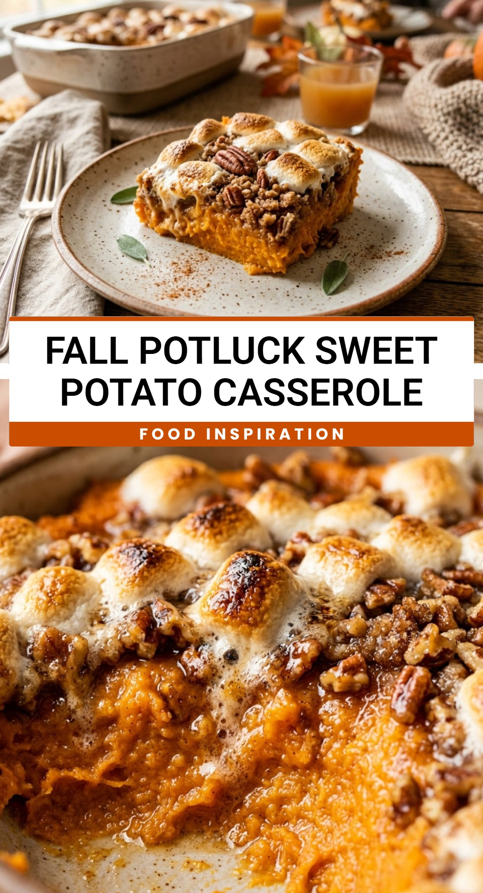

Fall Potluck Sweet Potato Casserole
October 1, 2026

When the air turns crisp and the leaves begin to change, nothing brings comfort to the table like a Fall Potluck Sweet Potato Casserole. This dish is a staple at Thanksgiving dinners and autumn gatherings for a good reason. It perfectly balances the natural earthiness of sweet potatoes with a buttery, crunchy pecan topping that feels like a warm hug in a bowl. Whether you are hosting a large family dinner or heading to a neighborhood potluck, this recipe is guaranteed to be the first dish to disappear from the buffet line.
Recipe Information
Prep Time: 20 minutes
Cook Time: 45 minutes
Total Time: 65 minutes
Servings: 12
Difficulty Level: Easy
Nutrition Information
Calories per serving: 380
Protein: 4g
Carbohydrates: 48g
Fat: 20g
Fiber: 4g
Sugar: 28g
Sodium: 120mg